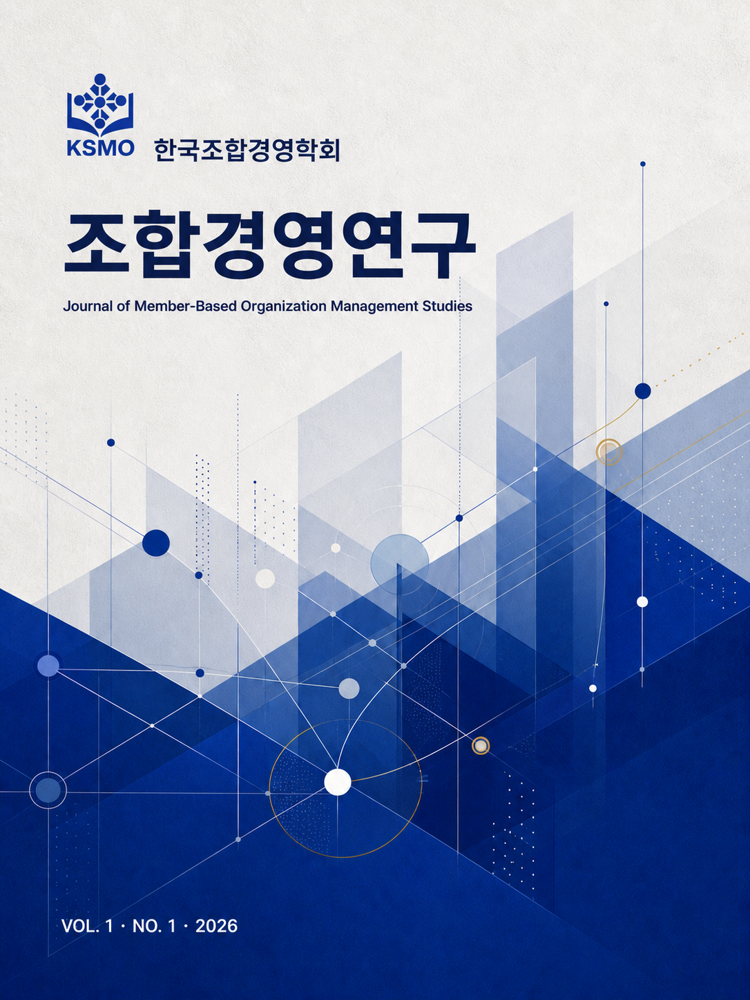

창간 준비 중
조합경영연구
Journal of Member-Based Organization Management Studies
- 발행기관
- 한국조합경영학회
- 발행계획
- 연 2회 검토 중
- 창간호
- 2026년 준비
연구 분야조직·거버넌스법제·회계·감사재무·위험관리조합원 가치·비교연구

VOLUMES & ISSUES권호 선택
VOLUME 1 · NUMBER 1 · 2026
창간호 논문 목록
아래 논문 제목과 저자 구성은 학술지 화면을 위한 편집 시안용 예시이며, 실제 투고·심사 또는 게재가 확정된 논문이 아닙니다.
조합원 참여가 거버넌스 성과에 미치는 영향: 의결권 행사와 정보접근성의 조절효과
협동조합 회계정보의 유용성과 조합원 의사결정: 공시 품질을 중심으로 한 실증분석
공제조합의 위험분담 구조와 재무건전성에 관한 비교연구
VOLUME 2 · NUMBER 1 · 2026
제2권 논문 목록
아래 논문 제목과 저자 구성은 학술지 화면을 위한 편집 시안용 예시이며, 실제 투고·심사 또는 게재가 확정된 논문이 아닙니다.
노동조합의 숙의적 의사결정과 집행부 책임성: 총회 운영 사례를 중심으로
농협·수협·신협 이사회의 구성과 감독기능 비교: 제도 차이와 공통원리
조합형 조직의 내부감사 독립성 확보를 위한 제도 설계
조합원 가치와 조직성과의 통합 측정모형 개발: 재무성과와 참여성과의 결합
GUIDE FOR AUTHORS
논문 투고 안내
논문 투고 시스템 개설 전 참고할 기본 방향입니다. 최종 투고 규정과 서식은 모집 공고 시 공개합니다.
- 원고 준비이론·실증·비교·사례·판례·정책 논문 및 연구노트
- 형식 점검저자정보 분리, 초록·핵심어·참고문헌과 연구윤리 확인
- 편집부 접수온라인 투고 시스템 개설 후 파일과 확인서 제출
- 익명 심사편집위원회 예비검토 후 외부 전문가 복수 심사